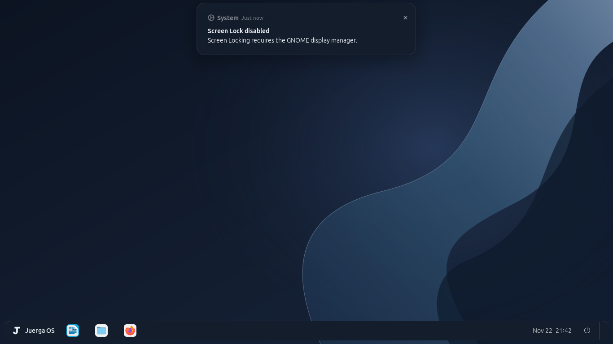

TU ESPACIOUn escritorio
Un escritorio
que se siente tuyo.
Un entorno elegante y familiar, con cada detalle pensado para que encuentres tu ritmo.
Buenos días.Todo listo para empezar.
Un sistema que se adapta a ti. Disfruta de un escritorio cuidado, intuitivo y preparado para todo lo que quieras hacer.

Todo lo que necesitas, justo donde lo esperas. Una experiencia visual limpia que te deja centrarte en lo importante.
Un entorno elegante y familiar, con cada detalle pensado para que encuentres tu ritmo.
Una interfaz clara y coherente para pasar de una idea a la siguiente sin perder el hilo.
Pequeños detalles que marcan una gran diferencia en tu día a día.
Accede rápidamente a tus aplicaciones y encuentra lo que buscas desde un menú intuitivo.
Colores suaves, un tema oscuro elegante y un escritorio cuidado de principio a fin.
Trabaja, navega y disfruta en un entorno familiar, construido sobre tecnologías abiertas.
Descubre cómo valoran su experiencia con Juerga OS.
«Me gusta lo sencillo que resulta encontrar todo. Se siente familiar desde el primer momento.»
«El diseño es limpio y agradable. Me encanta tener un espacio de trabajo sin distracciones.»
«Los detalles le dan personalidad. Tengo ganas de ver cómo sigue creciendo el proyecto.»
Hay una forma diferente de hacer las cosas.
Descubre un espacio diseñado para ti.